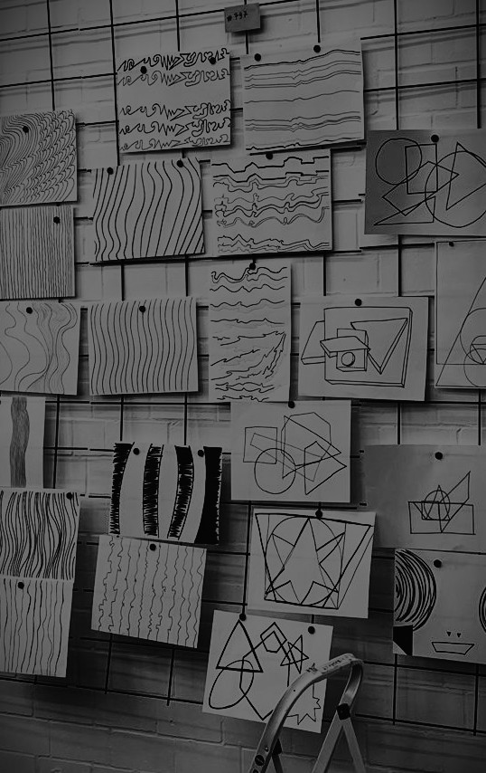
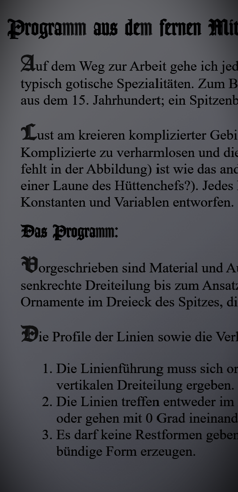
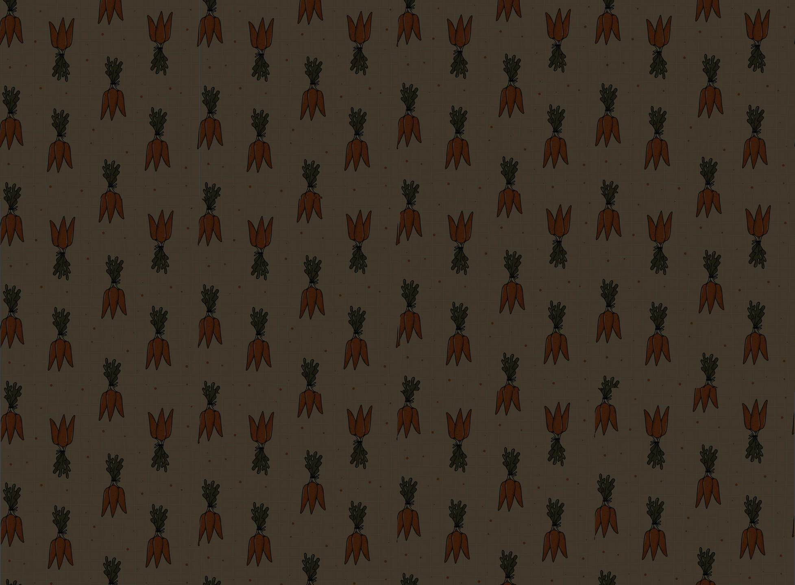
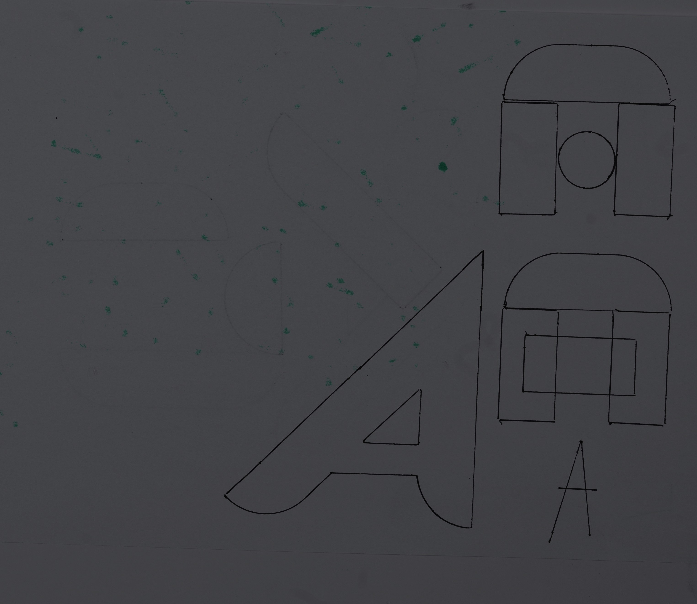
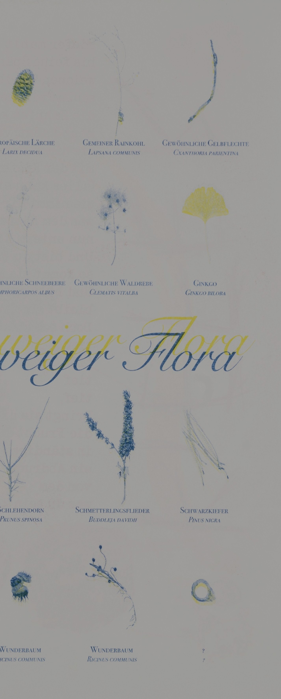

digitale grundlagen
DOKUMENTATION
Lena Buchmann
Gorch-Fock-Str.7
38104 Braunschweig
l.buchmann@hbk-braunschweig.de
Matrikelnummer: 80302

1.1 — drawing algorithms
Inspired by american artist Sol LeWitt, we did some drawings following his instructions. Then we created some drawings and instructions of our own. What is needed to communicate the quality of a line? What happens, if we take the roll of the machine - just following instructions? And what do we do, once instructions are not clear?
See more →

1.2 — text systems
Giving form to something without first reading it seemed reckless. Playfulness does not come naturally to me under certain constraints. Shouldn’t design support its content? Does support equal illustration? Gosh, let me read the content first!
See more →

1.3 — css drawings
Drawing occurs when the pen touches the paper and my brain seeps out through the finger, through the pen, via ink, onto the page. The line follows the thought; it does not have to be concrete. Drawing with shapes using CSS, however, requires the opposite: everything must be very concrete, the thought crisp, and the instruction clear. I struggled with this. I also struggle with imposing shapes in figure drawing. This exercise felt clumsy and unnecessarily cumbersome. I tried to help myself by making sketches first, but even then it remained difficult. And so, this bat remains wingless.
See more →

1.4 — first website
Making my first own website was fun. I stole a cake recipe from the internet, let AI create a stupid image for me, and went to play. Just see what I could do. You can choose which cake you want to bake — and what is life, if not the illusion of choice?
See more →

2.1 — morphological box
The morphological box is a technique used to come up with fun and creative combinations of things or variations of the same thing.
You choose three parameters and three variables for each of the parameters. Then you combine them randomly.
See more →

2.2 — magic triangle
The magic triangle is a technique used to create a creative space by limiting yourself with three rules.
See more →

3.2 — grid based type design
Everything can be a grid. A guideline to create new shapes. A limit within which new lines can occur.
See more →

4 — digital drawing tool
A tool can be everything. It could make your life easier, it could make it harder. It could generate something, visualize something. I like visualising data, so I chose to make a tool for me and my hiking friends that visualises who has collected the most stamps in the Harz mountains. Who will become the first Harzer Wanderkaiser*in of the lot?
See more →

5 — tools and print
A collection of organic materials. The flora of a city. For lack of a better word, because fungi are not plants, so they are technically not flora. Is the flora you can buy in a city part of that city’s flora, even if it does not naturally grow there? A risoprint project by Jonathan, Paul, and me.
See more →

6 — semester reflection
Click here if you want to read my reflective thoughts on the first semester Visuelle Kommunikation at the HBK Braunschweig. :)
See more →